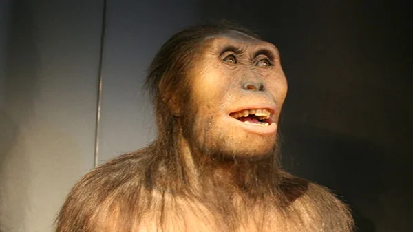
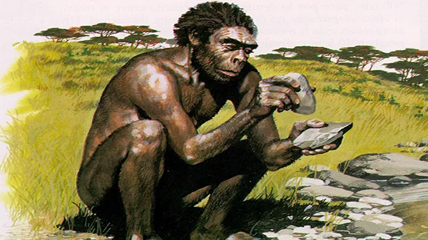
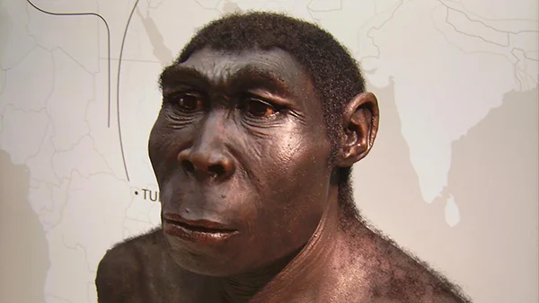
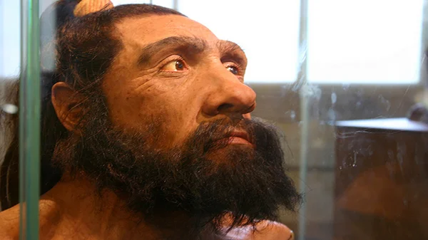
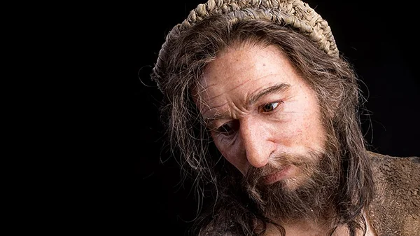

O que é evolução humana
Evolução humana é uma teoria que indica que o processo evolucionário se iniciou com as primeiras formas de vida até atingir o estágio atual do desenvolvimento humano, o Homo sapiens sapiens.
A biologia estima que a vida na Terra tenha surgido há 3.8 bilhões de anos na forma de organismos unicelulares denominados procariontes. Milhões de anos depois, com as mudanças relacionadas ao oxigênio e a evolução da fotossíntese, surgiram os primeiros seres eucariontes (com células complexas contendo organelas).
As mutações continuaram ao longo do tempo. Cerca de 530 milhões de anos atrás, surgiram os primeiros peixes, que em seguida deram origem aos anfíbios (340 milhões de anos atrás), répteis (310 milhões de anos atrás) e eventualmente aos mamíferos (cerca de 100 milhões de anos atrás). Finalmente, os primeiros mamíferos primatas na Terra deram origem aos hominídeos.
Etapas da evolução humana
.webp)
No estudo da evolução humana, é importante atentarmos ao fato de que o aparecimento de uma nova espécie não implica na extinção imediata de outra. A linha do tempo acima mostra que as espécies menos evoluídas coabitavam com seus sucessores por milhares de anos, até sua eventual extinção.
Australopitecos
A ciência acreditava que esta espécie se tratava, na verdade, de um ancestral próximo dos humanos. Essa classificação foi questionada após a descoberta de fósseis australopitecos mais antigos e com características muito similares aos membros do gênero homo. Hoje em dia, apesar de não existir consenso, as similaridades com os humanos mantêm a espécie dos australopitecos intimamente relacionada ao início da vida humana na Terra. Os australopitecos eram seres bípedes de baixa estatura (não ultrapassavam 1,4 metros) e possuíam o corpo coberto de pelos. A espécie vivia em zonas tropicais da África alimentando-se de frutas e folhas, e foi a primeira a utilizar o polegar opositor para segurar e manusear instrumentos.
Homo Habilis

Do latim “homem hábil”, a espécie viveu na Terra há cerca de 2,4 e 1,6 milhões de anos. Em termos físicos, é o membro do gênero homo mais diferente dos humanos atuais. Os homo habilis receberam esse nome por serem os primeiros hominídeos a utilizar as mãos para fabricar instrumentos rudimentares feitos de pedra. Seus cérebros eram 50% maiores do que os dos australopitecos e tinham estatura média de 1,3 metros.
Homo Erectus

Os homo erectus foram os primeiros a controlar o fogo. Além de contribuir para a sobrevivência na vida noturna, a descoberta trouxe drásticas mudanças na alimentação e nos costumes da espécie, possibilitando, especialmente, a migração para lugares mais frios. Por esse motivo, os homo erectus foram os primeiros a sair da África e espalhar-se pelo mundo, cerca de 1,8 milhões de anos atrás.
Homo Neanderthalensis

Mais conhecido como Homem de Neandertal, é considerado o ancestral mais próximo humano moderno. Viveram na Europa e na Ásia entre 2,5 milhões e 12 mil anos atrás. Apesar de possuírem estatura menor do que os humanos atuais, os neandertais tinham a constituição física muito mais forte e resistente que, somada ao domínio de armas e do fogo, fez deles exímios caçadores.
Homo Sapiens

Com a capacidade de raciocínio apurada, os Homo sapiens conseguiram interpretar o ambiente ao seu redor, solucionar problemas e prosseguir no processo de adaptação até os dias atuais. A ciência classifica o ser humano moderno como homo sapiens sapiens, que significa "homem que sabe que sabe". Isso significa que o ser humano atual desenvolveu a consciência dos seus conhecimentos e aprendeu a usá-los na
Teorias da evolução humana
Teorias da evolução humana Em oposição ao Criacionismo, teoria que explica a origem humana através de uma entidade divina, a teoria evolucionista baseia-se fortemente nos estudos desenvolvidos por Chales Darwin. O Darwinismo, como também é conhecida a teoria evolucionista, acredita que o ser humano, assim como outras espécies, evoluiu gradativamente ao longo do tempo. A evolução ocorre, então, conforme sofriam pequenas alterações como forma de adaptar-se ao ambiente.